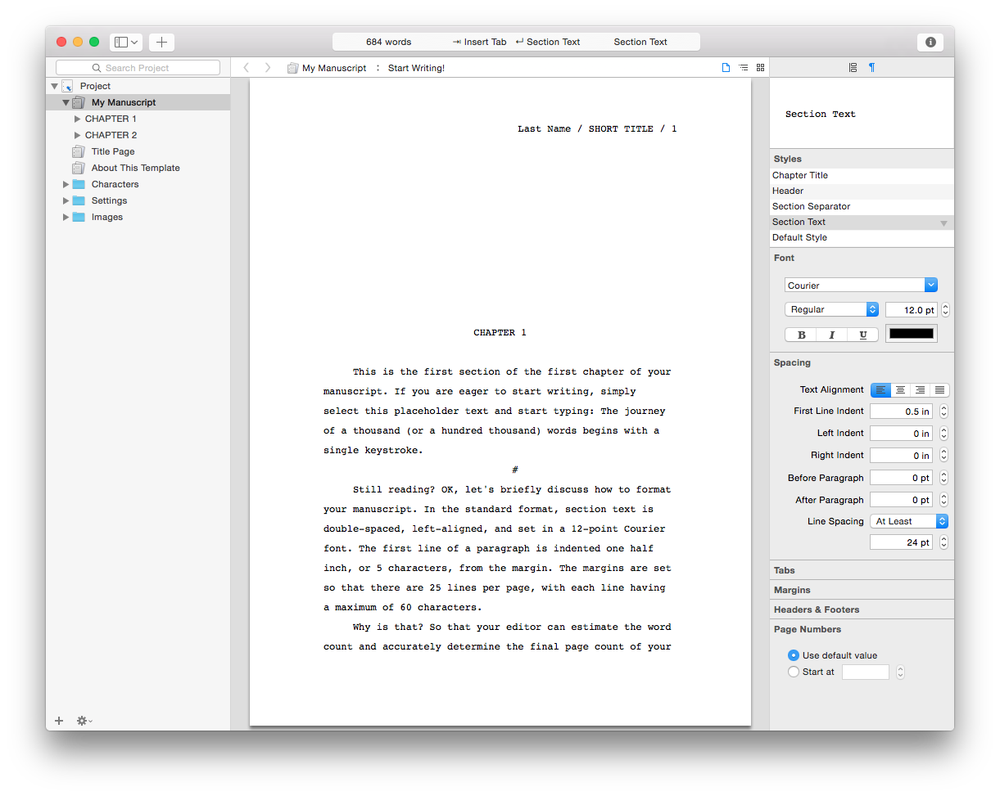
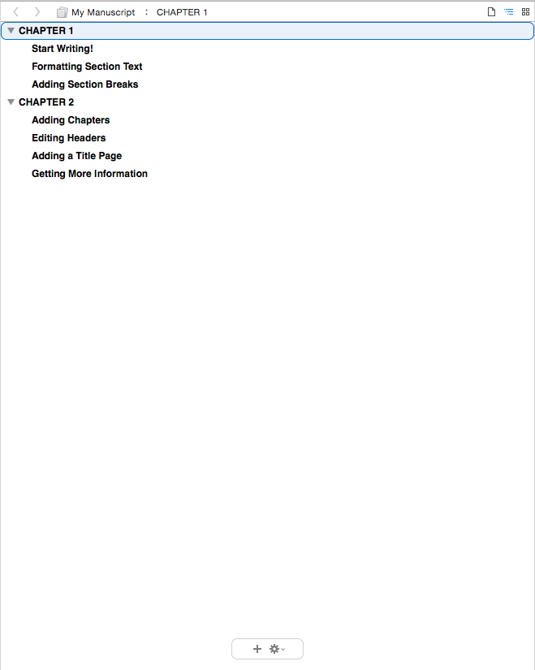
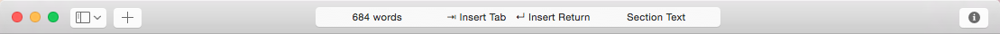
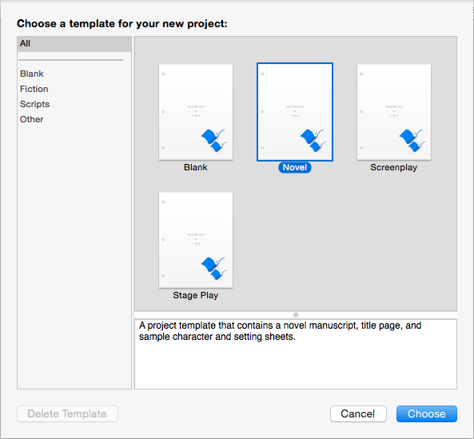
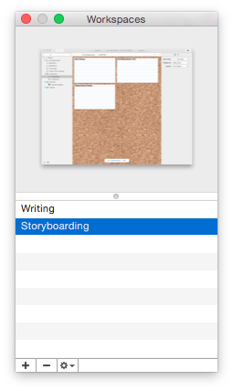
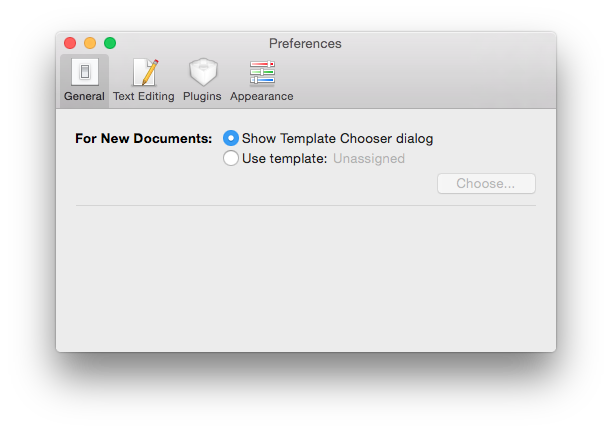
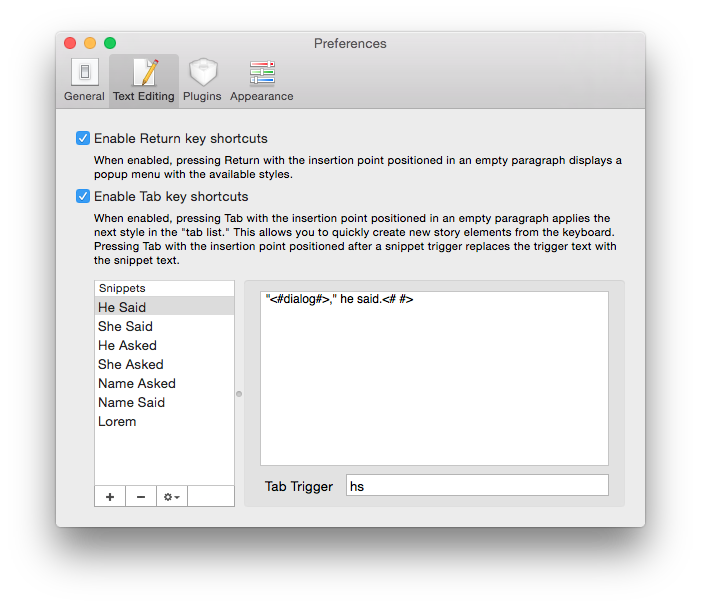
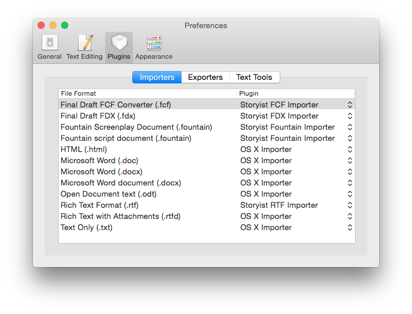

The Storyist main window consist of four parts:

Storyist Main Window
A Storyist project can contain text files, story sheets, folders, images, and bookmarks. The Project View—located to the left of the main window—helps you organize and access these items quickly.
To hide the Project View, choose View > Hide Project View. To display it again, choose View > Show Project View.
The Main view, located to the right of the Project view, has two components:
The Main view can be split both horizontally and vertically so that you can see multiple project items at once. For more information on splitting views, please see the section titled “Splitting Views.”
Much like a web browser, the navigation bar lets you switch between recently viewed pages. It also controls whether the content of the view is displayed using the Text view, the Outline view, or the Storyboard view.

Navigation Bar
The navigation bar contains the following buttons:
The Text view is where you’ll do most of your writing. It displays your text files and story sheets in text form.

Text View
To view your story elements in the Text view, navigate to the element you want to view, and do one of the following:
For more information on the Text View, please see the chapter titled “Working with Text.”
The outline view provides traditional outlining tools that let you quickly capture your ideas and work with them at a high level.

Outline View
To view your story elements in the Outline view, navigate to the element you want to view, and do one of the following:
For more information on the Outline view, please see the chapter titled “Working with Outlines.”
The storyboard view gives you a high-level overview of your text files, folders, and story elements (characters, plot points, and settings) by displaying them as index cards or photographs on a corkboard or collage.
To view your story elements in the Storyboard view, do one of the following:
Headings and groups are shown as items on corkboard.

Corkboard
Body text and individual story elements are shown in a collage.

Collage
For more information on the Storyboard view, please see “Working with Storyboards.”
The Storyist toolbar provides buttons for setting up the Storyist window and a status bar that shows information about the current cursor selection. The default toolbar configuration is shown below.

Toolbar
Starting from the left, these are the Toolbar icons:
When you create a new document, Storyist displays a dialog to allow you to choose a template for your project.

Template Chooser
The Workspaces window lets you create and quickly switch between snapshots of your project views and windows. To view the Workspaces window, choose Window > Workspaces > Manage Workspaces

Workspaces Window
The Inspector view allows you to quickly view and edit settings and formatting information.
To open the Inspector view, do either one of the following:
Each type of project item has its own inspector. The project and text inspectors are shown below.

Inspector Views
The Versions window gives you a quick overview of the older versions of your project and allows you to:
To view the Versions Window, choose File > Show Previous Versions.
Note: The Versions Window is not available until you’ve saved your project.

Versions Window
Versions are stored on your Mac, and if you've enabled Time Machine, on your backup drive.
You can use the Mac OS X Fonts window to change font attributes such as typeface, size, color, underlining, and strikethrough.
To view the Fonts window, choose Format > Font > Show Fonts.

Fonts Window
You can use the Mac OS X Colors window to change text color.
To view the Colors window, do one of the following:

Colors Window
The General Preferences Pane lets you specify which template to use for new documents.

General Preferences Pane
The Text Editing Preferences pane lets you specify:

Text Editing Preferences Pane
The Plugins Preferences pane lets you specify which format converters are used for specific file types (for example, RTF files) and which text tools appear in the Edit > Tools menu.

Plugins Preferences Pane
The Appearance Preferences pane lets you customize the fonts, colors, and icons used in the application..

Appearance Preferences Pane
Many of the Storyist menu commands described in this user’s guide can be performed from the keyboard. To see a list of the available shortcuts, open Storyist and choose Help > Storyist Help, and click on the Keyboard Shortcuts link.
Some menu commands are also available from shortcut menus. To bring up a Shortcut menu, right-click or control-click an object or some selected text.